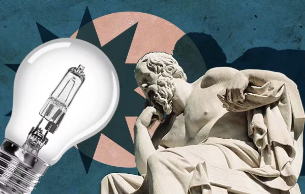

Como a filosofia aparece nos vestibulares?
O estudo de filosofia é fundamental para conseguir resultados melhores em suas provas de vestibular. Por isso, é importante criar uma rotina de estudos e uma estrutura para conseguir melhorar o impacto desse tipo de ação. Nos últimos anos, a Filosofia tem conquistado um espaço crescente nos vestibulares das principais universidades do Brasil. Os exames, como o ENEM, têm cobrado uma compreensão crítica dos conceitos filosóficos e a aplicação desses conhecimentos a situações contemporâneas. Entre os temas recorrentes nas provas estão as ideias de Platão, com sua Teoria das Ideias e a alegoria da caverna, a ética de Aristóteles, o existencialismo de Sartre, e o pensamento crítico de Kant. Esses temas não só exigem memorização, mas também a capacidade de refletir sobre como esses conceitos moldam nossa sociedade e nossa política atual.
No ENEM, por exemplo, a Filosofia é uma disciplina chave, com questões que frequentemente abordam tópicos como ética, política, epistemologia e história da filosofia. Filósofos como Platão, Aristóteles, Immanuel Kant, Nietzsche e René Descartes são frequentemente mencionados, e é importante que os estudantes compreendam não apenas os nomes, mas os conceitos profundos que esses filósofos abordam. Obras como O Banquete de Platão e Crítica da Razão Pura de Kant são exemplos de textos que podem ser explorados. Além disso, temas como o racionalismo moderno e a filosofia contemporânea têm ganhado destaque, refletindo o avanço do pensamento filosófico ao longo dos séculos. Com o crescente impacto da tecnologia na sociedade, a filosofia também desempenha um papel crucial em discutir questões éticas e sociais, como a moralidade das máquinas e os direitos digitais. Este é um ponto relevante tanto para o estudo de filosofia quanto para o exame de questões contemporâneas que exigem uma análise filosófica crítica. A interseção entre filosofia e tecnologia está cada vez mais presente, mostrando como a disciplina ajuda a compreender e a lidar com os dilemas da modernidade. O estudo da Filosofia, portanto, não é apenas uma preparação para os vestibulares, mas também uma maneira de refletir sobre o mundo e os desafios éticos e políticos atuais.
